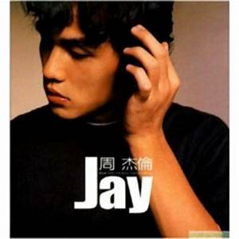

周杰倫音樂風格 周杰倫在音樂中添加各式元素，並巧妙的融合，不顯突兀。他常將日常聲音或特殊風格的音樂銜接在歌曲中，周杰倫與作詞者方文山、黃俊郎的組合具有豐富故事性與畫面性。 周杰倫擅長以不同的音樂元素來做創作靈感與素材，並進一步融合各式聲音於音樂中，塑造出鮮明的主題意象。在2000年杰倫組織中對周杰倫首張專輯《Jay》的介紹如下：「專輯中R&B以及New Hip-hop 的新曲，加上古典巴洛克式絃樂伴奏及Band 的加入，形成一種英國式的復古風格，更特別的是，周杰倫嘗試把超高難度，西班牙式風格的絃樂演奏，表現在專輯歌曲中，意境卻出乎意料的極度逼近電影配樂，這種音樂是臺灣目前（指2000年）所沒有的。」周杰倫在演唱不同曲風的歌曲，會採用不同的演唱方式，唱抒情歌曲時，會有略帶鼻音引吭高歌的聲音。 方文山的歌詞，除了主題的多元性之外，就是歌詞的意象與畫面豐富，利用大量華麗古典的詞彙，激發了舊題材重新詮釋的想像空間，營造視覺性與故事性強烈的文字風格。與周杰倫搭配，於是產生了美式曲風與中式歌詞的東西新舊異質組合。 周杰倫的曲風前後期丕變，後期輕快的歌曲增加、昔日深刻的悲歌減少，在日後經常被討論；在胡婉玲《台灣演義》專訪中，提出周杰倫的際遇改變了心境這一說法。[7] 周杰倫的音樂風格在第二張專輯《范特西》後大致成形。往後的專輯就沿著這樣的模式在發展。